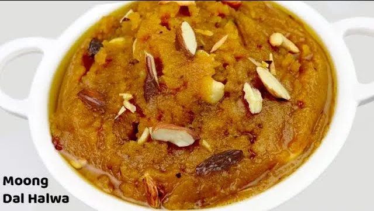

Moong Dal Sheera

Ingredients
100 gm Mung Dal (without skin)(grinded)
75 gm Desi Ghee
75 gm Sugar
1 cup milk
½ cup water
8-10 Almonds (finely chopped)
5-6 Pistachio (finely chopped)
¼ tsp cardamom powder
Instructions
Heat ghee in a pan and add mung dal powder in it.
Roast it in ghee till it is color change to light brown.
Boil milk and water. Then add boiled milk – water and sugar. Stir well.
Cook till it becomes dry and ghee is separated.
Then add cardamom powder and stir well.
Garnish with almonds and pistachio.